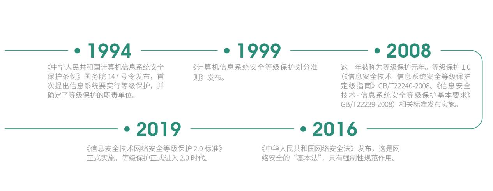
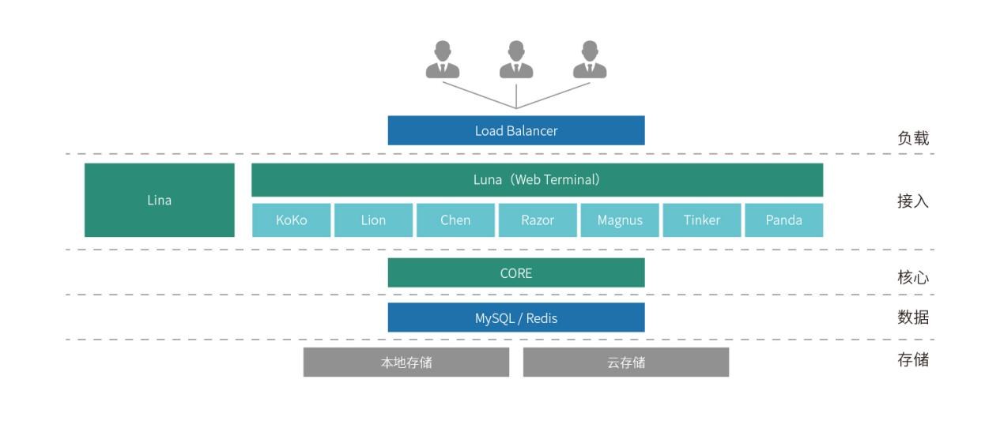
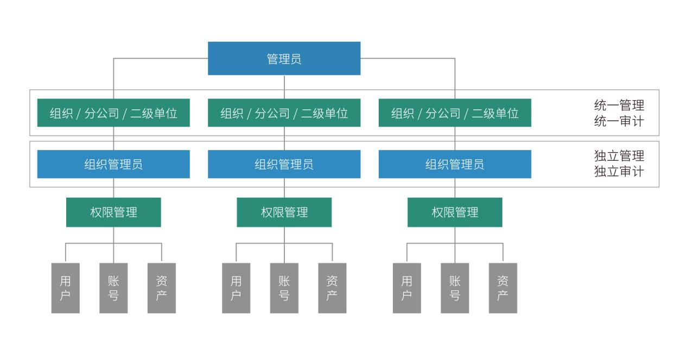
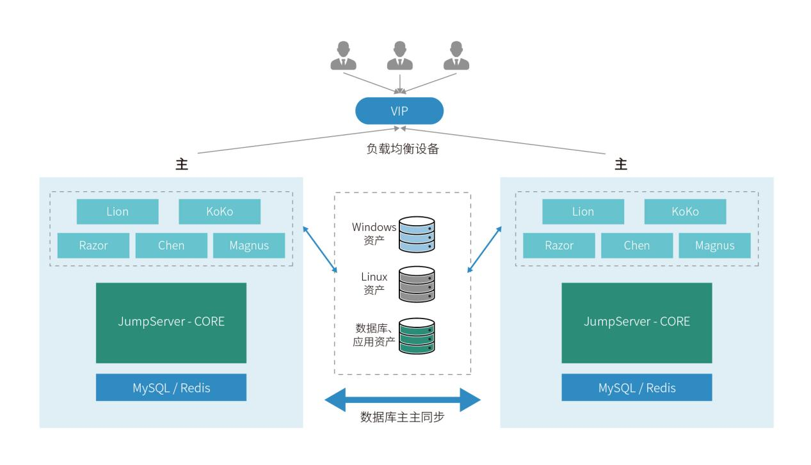
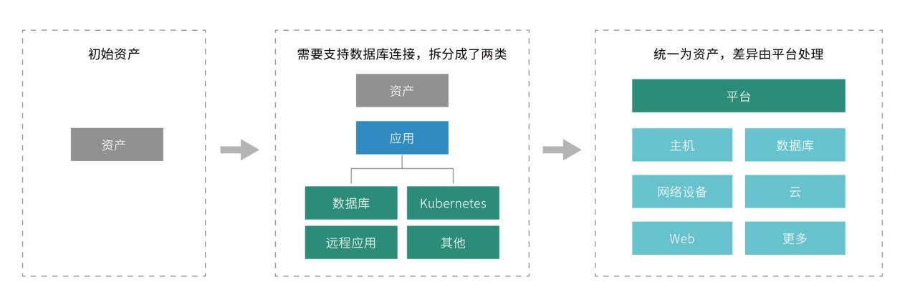
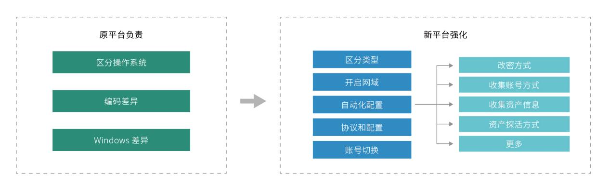
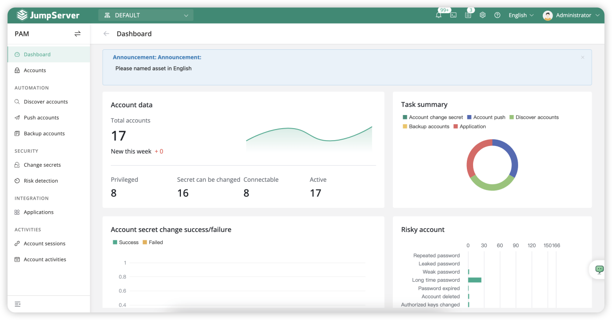
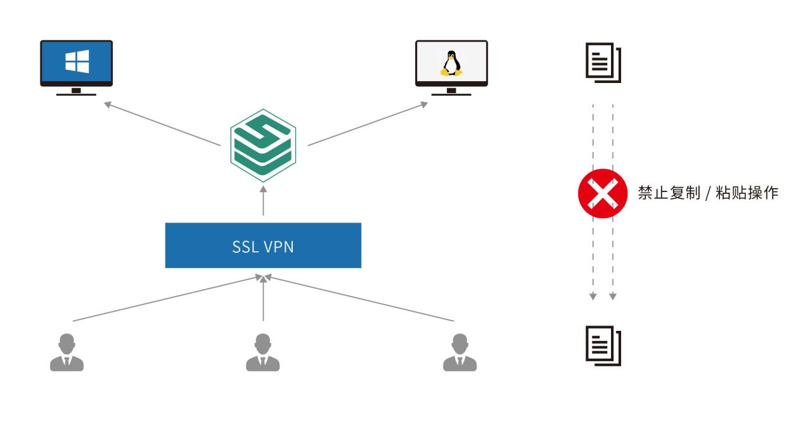
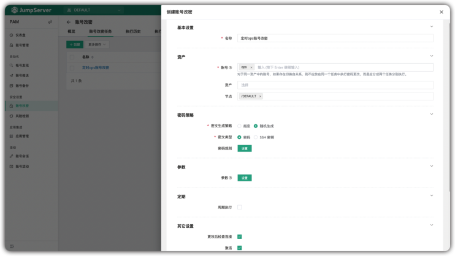
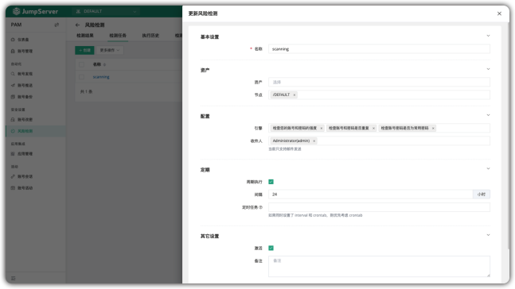

新一代堡垒机建设指南
JumpServer 开源项目组 编著
目录
- 1. 引言
- 2. 堡垒机发展历史回顾
- 3. 新一代堡垒机的内涵
- 4. 基于 JumpServer 构建新一代堡垒机
- 5. JumpServer V3 版本介绍
- 6. JumpServer V4 版本介绍
- 7. JumpServer PAM 特权账号管理
- 8. 案例研究 & 社区分享
1. 引言
1.1 编写本白皮书的目的
安全问题是企业信息化建设过程中非常重要的一环，随着近年来安全事故的频发，越来越多的企业意识到安全对于企业的重要性。安全涉及的领域也非常广泛，从网络安全、身份与访问安全到应用安全、数据安全等方方面面，它们共同在当今企业的信息化系统中起到保驾护航的作用。
随着近十年来 IT 行业的快速变化，企业数字化转型的浪潮席卷而来，传统的安全解决方案在新的环境下面临着各种各样的挑战，为此业界也发展出很多新的安全概念，比如最近几年比较流行的"零信任安全"、"云安全"等。同时，随着等保 2.0 新规的颁发和落地实施，无论是国家层面还是企业层面对于信息安全的重视程度越来越高。
2019 年 12 月颁布实施的《信息安全技术网络安全等级保护基本要求》中，在身份鉴别、访问控制、安全审计等方面提出了明确的要求。定位于解决企业 IT 运维安全审计的堡垒机正是解决此类问题的主要手段。尽管堡垒机的诞生已经有 20 年的时间，但是在数字经济时代及等保 2.0 规范的要求下，堡垒机产品自身也面临着更新换代的强烈诉求。为此，JumpServer 开源项目组希望借助本白皮书和业界同仁们系统地回顾堡垒机的发展历程，及其在数字经济时代所面临的挑战，并分享构建和迭代新一代堡垒机的一些想法与思路。我们希望以此为契机与大家共同推动中国堡垒机市场的进化，用更好的产品支持企业在数字经济时代的运维安全审计需求。
1.2 如何组织、发布和维护本白皮书
本白皮书由 JumpServer 开源项目组编写而成。编写团队从企业实践和技术演进的双重视角出发，结合自身在身份与访问安全领域的长期研发及落地经验，同时积极听取行业内专家的意见和建议，在此基础上完成了本白皮书的编写任务。
本白皮书第一版于 2021 年 6 月发布，采用线上渠道（网站、微信公众号等）为主的分发模式，在发布后收到了很多用户的积极反馈。2023 年 2 月，JumpServer 开源堡垒机正式发布 v3.0 版本，编写团队再次组织更新并于 2023 年 7 月发布第二版白皮书。2025 年 5 月，JumpServer v4.10 LTS 版本发布。在这个版本中，JumpServer 变得更加强大，强化了 PAM（Privileged Account Management，特权账号管理）的能力。2025 年 8 月，JumpServer 开源项目组对本白皮书进行内容升级，增加了 JumpServer V4 版本介绍、PAM 功能介绍等内容。
1.3 本白皮书给企业带来的价值
本白皮书为企业的安全运维人员、安全合规专员、审计部门人员以及高层技术管理者所准备。希望通过本白皮书能够让相关读者更好地理解在数字经济时代下新一代堡垒机建设的理念和关键要点，为企业构建运维安全审计体系等相关工作提供技术性的指引。当然，企业新一代堡垒机建设所涉及的各个方面和细节无法在一本简短的白皮书内详尽描述。期待本白皮书能够抛砖引玉，引发大家更加全面和深入的思考。
2. 堡垒机发展历史回顾
2.1 堡垒机的诞生
过去几十年来，伴随着信息技术的发展，信息化系统逐渐渗透到企业日常运营的方方面面，使得需要参与 IT 运维的人员越来越多。来自于企业内部人员或者第三方维护人员的技能水平参差不齐，用户误操作、恶意操作等行为所造成的信息安全事故日益增多，而此类安全事故往往会给企业造成极大的损失。因此，企业信息安全防护已经从单纯传统的网络安全防护逐步延伸到运维操作安全防护领域。
在这一背景下，侧重于运维安全审计的堡垒机应运而生。堡垒机是指对用户的操作进行权限控制和对操作行为进行审计的安全产品，属于身份与访问安全的范畴。
在企业 IT 系统运维的过程中，为了保障内部系统不受内外部入侵的破坏，运维安全审计系统通过访问控制、身份认证、账号管理、行为审计等多种信息安全技术，对网络设备、主机系统、应用系统的运维访问进行精细化管理，从而帮助企业对 IT 运维建立全面的、包含事前识别与规划、事中控制，以及事后审计在内的安全管理体系。
堡垒机的核心功能是"安全访问+操作审计"。要实现这一目标，则需要在终端设备和目标资产中间加一层协议转发节点，所有对目标资产的请求都要经过这一节点。该节点能够拦截非法访问，阻断不合规的危险命令，并对内部人员的所有操作进行审计监控，以便进行事后追溯。而以上所说的中间节点就是堡垒机，堡垒机在网络环境中的经典拓扑如图 1 所示。

2.2 堡垒机的发展历程
按照业界的普遍共识，堡垒机最早诞生于 2005 年前后。在过去接近二十年的时间里，堡垒机的发展经历了如下几个重要的时间节点，具体如图 2 "堡垒机发展简史"所示。

在 2005 年以前，当运维人员需要登录到目标资产进行操作时，会在中间部署一台 Windows / Unix 的服务器作为跳板机（或者叫做前置机 )。所有的运维人员都需要先远程登录到跳板机，然后再从跳板机登录到其他服务器中进行运维操作。但跳板机只是为了解决用户集中登录的问题，并不能回答"谁在什么时间点登录了哪台服务器进行了什么操作"，所以一旦系统出现问题很难快速定位具体的原因和相关人员。另外，在这种模式下，后端目标资产的账号安全性也无法得到良好的保障，每个用户均能拿到目标资产的用户名和密码。
因此，市场需要用更新、更好的安全技术理念来实现运维操作管理。2005 年前后，堡垒机开始以一个独立的产品形态出现，并且陆续得到企业用户的广泛采纳。堡垒机的广泛部署有效降低了企业 IT 系统运维操作的风险，使得企业运维操作管理变得更加简单、更加安全。
2.3 等级保护推动堡垒机的发展
随着信息化技术的普及，国家对于信息化安全的重视程度越来越高。从 1994 年起，国家各级部门颁布了各种信息安全相关的法律法规，其中比较重要的几个事件如图3所示。
我们经常听到的"等保"，即上文出现的信息系统安全等级保护。根据信息系统在国家安全、经济建设、社会生活中的重要程度，以及其一旦遭到破坏、丧失功能或者数据被篡改、泄露、丢失、损毁后，对国家安全、社会秩序、公共利益以及相关公民、法人和其他组织的合法权益的危害程度等因素，等级保护被划分为五个等级（如表 1 所示）。
| 等级 | 说明 |
|---|---|
| 第一级 | 一旦受到破坏会对相关公民、法人和其他组织的合法权益造成损害，但不危害国家安全、社会秩序和公共利益的一般网络 |
| 第二级 | 一旦受到破坏会对相关公民、法人和其他组织的合法权益造成严重损害，或者对社会秩序和公共利益造成危害，但不危害国家安全的一般网络 |
| 第三级 | 一旦受到破坏会对相关公民、法人和其他组织的合法权益造成特别严重损害，或者会对社会秩序和社会公共利益造成严重危害，或者对国家安全造成危害的重要网络 |
| 第四级 | 一旦受到破坏会对社会秩序和公共利益造成特别严重危害，或者对国家安全造成严重危害的特别重要网络 |
| 第五级 | 一旦受到破坏后会对国家安全造成特别严重危害的极其重要网络 |
在以上的等级划分中，等保法规明确要求第三级及以上等级保护需要具备身份鉴别（ Authentication ）、访问控制（ Authorization ）、安全审计 （ Auditing ） 等运维安全审计的能力和措施。因此，等保的出现使得堡垒机在全国受监管的企事业单位及关系国计民生的重要行业内快速落地，同时也推动了堡垒机产品和技术的快速演进，让越来越多的客户认识到堡垒机在安全运维过程中所带来的价值。
2.4 传统堡垒机面临的挑战
随着企业内部的安全需求和各种合规要求，堡垒机的市场空间被快速打开，产品和技术也得到了快速发展。但遗憾的是，进入 21 世纪的第二个十年后，堡垒机的产品和技术发展进入了明显的瓶颈期。与此同时，随着互联网技术及智能手机的快速普及，数字化转型已经深入到每个人生活的方方面面。对于企业来说，IT 系统的规模愈加庞大，更广泛的人群需要使用 IT 系统，企业对 IT 系统的依赖程度逐渐加深，这就导致企业信息安全部门对于堡垒机的需求也发生了巨大的变化。
这种变化主要体现在堡垒机所处的企业IT环境在进行深度变革的时候，具体可以从两个视角来观察：
① 堡垒机管理的目标资产端
- 资产爆炸式增长，且频繁变更。企业的 IT 资产规模从几十台资产增长到几千台甚至上万台资产。资产的数量快速增长，使得资产和用户的管理难度呈现出指数级增长的态势。与此同时，资产的变更也日益频繁。之前企业内部上线一套系统后，一般是等到业务下线才会回收机器。但如今业务需求的多变导致业务系统需要频繁进行变更，扩容与缩容也让资产的变更更加频繁。尤其是这些年基于弹性和 API 设计的云基础设施快速进入企业内部，资产的规模变化和变更频率进一步加快；
- 资产高度异构化。中国企业的 IT 架构在过去三十年间发生了巨变。基础设施层面从早期的物理机、 虚拟化到现在的私有云、 公有云、容器云等；数据库从之前的 DB2、SQL Server 到现在流行的开源数据库 MySQL、MariaDB、MongoDB 等；同时，在更广泛的人群依赖 IT 系统的同时，企业也引入了各种复杂的应用软件；
- 资产分布范围广。互联网的兴起使得企业的业务不再受地域的限制，业务可以在全国乃至全球范围内广泛布局，这就使得企业由传统的集中式单一数据中心向多地分散的分布式数据中心布局转变。
② 堡垒机系统的使用端
- 堡垒机使用端平台的变革。2010 年之后，互联网快速兴起，我们访问互联网的设备从早期的台式机、笔记本到现在随处可见的智能手机和平板电脑。操作系统也从早期的 Windows 系统到现在多样化的 MacOS、Linux、iOS、Android 系统等。堡垒机的使用端发生了巨大变化；
- 堡垒机使用端人群的扩张。随着企业 IT 系统快速渗透到企业内部的方方面面，堡垒机使用的人群也已经从传统的 IT 专业运维人员扩张到大量的泛 IT 人群，包括开发测试人员、业务运营人员乃至公司的部分管理人员等。这些人群普遍缺少对于 IT 运维软件的使用经验，他们期待堡垒机的使用能够更加简单，并且对访问端的环境要求也可以更低一些。
这些外部环境的变化对于传统堡垒机而言是极大的挑战。具体体现在以下几个方面：
- 复杂的访问端环境造成额外的维护成本。传统堡垒机方案中用户接入门槛高，维护成本也偏高。越来越多的企业需要堡垒机能够提供"传统客户端 + Web 接入"的双重访问模式，尤其对 Web 接入的需求越来越强烈。传统方案在 Web 接入方式上普遍采用较为原始的浏览器插件模式，导致大量的浏览器插件不匹配、用户无法升级浏览器等影响用户使用体验的问题，严重影响了堡垒机的接入访问效率；
- 资产规模的快速增加带来的管理复杂度提升。传统的堡垒机是通过手动录入 IP 或者 Excel 表格进行资产导入，但是对于现在动辄几千甚至上万台的资产，如果需要人工录入，这种方式不仅效率低还很容易出错。而且在资产频繁变更的情况下，这样粗放的管理方式大概率会逐步发展到不可控的阶段；
- 分散资产带来的管理成本增加。企业的 IT 资产分散在全国乃至全球各地，各个地区间网络连接的带宽和稳定性给堡垒机的日常管理带来了很多的不确定因素。在传统的架构中，部署在 A 地的堡垒机需要去管理 B 地的资产，一般是需要在 A 地和 B 地之间部署专线来解决。分支机构越多，机构之间的距离越远，往往会带来更高的管理成本。另外一种传统的解决方案是在每个区域购买一台堡垒机，多个区域组成一个大的集群，但这种方案不仅会造成大量的成本浪费，也会给管理上带来很多不必要的麻烦；
- 审计对象的复杂化。当下 IT 技术的演进速度越来越快，在 IT 基础设施层面，Kubernetes 成为容器云建设的首选标准。随着一些新型数据库产品的出现，以及泛 IT 人群带来的各种应用软件，传统堡垒机所能支持的审计对象已经无法满足 IT 环境的新变化，需要将新出现的 IT 基础设施作为新的审计对象考虑进来。
因此，面对如今数字经济时代下的运维管理环境，传统的堡垒机解决方案在实际应用场景中的短板日趋明显。企业用户呼唤新一代堡垒机的出现，以应对当下运维安全审计的实际需要。
3. 新一代堡垒机的内涵
如前所述，过去十年间，堡垒机所处的外部环境发生了翻天覆地的变化，这给传统堡垒机带来了非常大的挑战。另外，企业IT软件领域的技术架构也有了长足的进步，技术组件从闭源走向开源，并且涌现出了非常多丰富好用的组件。新的外部环境和新的产品技术共同推动了新一代堡垒机的诞生。新一代的堡垒机的内涵主要体现在简单易用、分布式架构、广泛资产类型、软件部署和开源开放这五个方面。
3.1 简单易用
随着越来越多的企业在经营环节进行数字化改造，企业内必然有越来越多的泛 IT 人员需要使用堡垒机。这给原来为专业 IT 运维人员设计使用的堡垒机带来了用户使用体验的新挑战。新一代堡垒机需要在产品的简单易用性方面明显上一个台阶才能够满足企业在堡垒机应用体验方面的新需求。用户使用体验上的简单易用主要表现在以下几个方面：
- 低使用门槛。好的产品可以让使用者以最低的学习成本快速地使用起来。堡垒机的用户角色多种多样，但是终端使用者是其最主要的使用群体。而且，由于越来越多 IT 设备和应用需要接入堡垒机，堡垒机的终端使用者也由传统的专业 IT 人员扩展到企业内任何需要和 IT 设备及应用打交道的泛 IT 群体。在这种情况下，我们要考虑的是产品对于众多使用者是否轻便，能否能达到"傻瓜式"操作的目标。
- 交互方式友好。很多传统堡垒机的交互方式还停留在上个时代的桌面软件时代。在互联网产品交互模式和技术愈发丰富和灵活的当下，新一代堡垒机的交互方式应该遵循主流互联网产品的体验模式。这会让大量的泛 IT 人群更容易接受，并能大幅降低软件培训和学习的成本。
3.2 分布式架构
如今，软件的分布式架构已经在互联网业务系统中被广泛使用，并取得了巨大的成功。而对于大部分的堡垒机产品来说，分布式还是一个比较新的概念，被采纳的程度并不理想。但就像前面所介绍的那样，堡垒机外部环境的剧烈变化对堡垒机的分布式架构提出了迫切的需求。具体表现在如下几个方面：
- 堡垒机需要纳管的资产规模在快速增加，最终使用的用户从几十人发展到几百人，乃至上千人。这意味着堡垒机需要承受非常高的并发压力，而且这种并发压力已经达到靠传统垂直伸缩的模式无法支撑的阶段。面对这一问题，传统堡垒机的解决方案经常是部署多套独立运行的堡垒机。这种方案无疑会带来部署成本和维护成本的显著上升。而软件分布式架构则是一种能够更好地面对这一问题的解决方案。为此，基于分布式架构的水平伸缩能力成为新一代堡垒机的必然之选。要建设这种分布式架构，堡垒机产品架构的每一层逻辑都需要能够独立解耦，从前端到业务层，再到后端数据库。这样一来，在将来资产快速扩张和并发压力快速增加的时候，就能够做到在线水平扩容，并且不会对正常业务造成负面影响；
- 堡垒机需要纳管的资产分布与访问分散化。由于企业内部有越来越多的运营环节依赖于 IT 系统的支撑，随着线上数字业务的发展，企业 IT 系统覆盖的区域也在快速扩张。为此，原来人员集中、资产集中的堡垒机使用场景快速分散化。新一代堡垒机需要能够解决来自各地不同人员对分散在各地的不同资产进行快速访问的需求。而且这种访问最好能够遵循"网络就近原则"，以提供给用户更好的使用体验。与之相比，传统堡垒机的解决方案还是以分地域多套部署为主。传统方案一方面增加了部署和管理的成本，另外一方面也达不到分散资源统一管理的目标。通过分布式架构，新一代堡垒机可以做到组件分布式部署，并通过网络路由达到最优访问路径的选择，从而实现分散资产集中管理和分散人员就近访问的平衡；
- 堡垒机的分布式架构还可以让系统的每个组件都具备独立高可用部署的能力。分布式架构下，当整体架构中任一组件的任一节点出现问题时，对整体业务可以做到不中断、无感知，保证可用性且具备快速容灾切换的能力，保障运维安全系统的稳定高效运行。另外，分布式架构还可以让堡垒机根据不同使用场景下的实际需求对不同组件进行独立的容量规划和安排，尽可能做到资源的高效利用；
- 支持大规模分布式环境下的多租户管理。对于现在集团型企业或者多数据中心的企业而言，堡垒机的部署和管理模式是一个很大的难题。传统的解决方案是每个子公司或者每个数据中心都部署一套独立的堡垒机，但这样带来的问题是部署成本的快速攀升，并且还需要不断地扩充硬件，并且每套堡垒机都得独立管理，管理成本快速增加，需要重复进行管理。如果能够把云计算中的关键特性——"多租户"融入到堡垒机的设计理念中，让一套堡垒机能够统一管理不同数据中心乃至不同租户（子公司或者业务部门）的资产，这无疑会实现关键性的改进。同时，多租户模式还给管理权限下放带来了可能性。用户可以在一套堡垒机内管理全部资产，又可以给每个租户独立的运维管理权限。这样不仅帮助用户削减了管理的复杂性，还能够降低用户的购买成本。
3.3 广泛的资产类型
运维安全审计从早期的字符集、图形、文件传输层审计逐步发展到后期出现的基于 SQL 级别的审计，由此诞生了多种形态的产品。随着企业 IT 系统部署方式和技术栈的变化，未来肯定还会出现新的运维安全审计需求。作为新一代堡垒机，需要考虑尽可能地在一套系统内满足多种运维安全审计需求。截至当前，我们常见的资产类型分为几种：
- 常规主机及网络设备。这种是我们最常见的设备，支持包括 SSH、RDP、Telnet、VNC 等内的常见协议类型。这些设备从堡垒机诞生之日起就是被作为审计对象的，堡垒机通过相应的协议即可管理对应的设备；
- 数据库平台。目前市面上涌现出来的新型数据库平台种类很多，不管是传统关系型数据库还是非关系型数据库，或者是云数据库，新一代堡垒机可以考虑将 SQL 级别的数据库运维安全审计回归到堡垒机产品中；
- 公有云及容器云平台。当客户侧业务量较高和较低时， 云资产的"弹性"空间较大， 这导致了管理人员需要频繁对云上资产进行扩容、缩容。面对这种云资产数量的不确定性，在纳入到堡垒机进行管理时，是否能够对其进行灵活管理就变得十分重要，否则刚刚纳入堡垒机的资产，可能在一天后就被删除。这对于堡垒机的运维人员来说是一件极其痛苦的事情，而且频繁的操作也意味着更高的出错率。
因此，新一代堡垒机需要做到云资产的频繁变更和简化堡垒机管理之间的平衡。基础设施云化后，要求堡垒机能够在资产管理上有较好的适配性和灵活性，最好能够适配云平台的 API 接口，有效降低平台资源管理的难度。另外，随着 Kubernetes 成为构建容器云平台的事实标准，很多企业在开发测试及生产环境中都部署了多套 Kubernetes 集群，使用人员也越来越广泛，这也带来了系统安全合规的不确定性。新一代堡垒机需要将 Kubernetes 集群运维的安全审计也纳入到能力范围之内；
- 浏览器等其他类型应用。在"浏览器为王"的数字化时代，软件系统是非常重要的资产之一。用户在软件系统中所做的重要操作需要被留痕审计，因此泛 IT 人群引入的各种软件自然也需要作为审计对象被新一代堡垒机所纳管进来。
3.4 软件部署
传统堡垒机多以硬件形式进行售卖，硬件一体机本质上就是将软件部署在独立的硬件设备之上。尽管硬件一体机在部署上线和独立运维上有一定的优势，但在面临新一代堡垒机需要解决的各种需求时，硬件形态越来越成为一种限制和束缚。同时，硬件一体机带来的额外硬件维护管理工作也成为了运维人员的一种负担。随着硬件虚拟化技术及云平台的普及，软件部署的方式逐渐成为堡垒机的首选部署方式。相较于硬件而言，软件模式不仅更易于部署和维护，还在扩缩容、高可用方案上更具灵活性。
- 易于部署和维护。软件形式的堡垒机只需要一台虚拟机或者云主机即可进行部署，省去了前期的布线、上架等操作，也不需要进行后期繁重的硬件运维工作。尤其是在公有云环境下，软件部署已经成为其唯一的选择；
- 易于扩容和缩容。软件形式部署的堡垒机，在后期需要扩容时，不需要考虑硬件的交付周期，可以随时部署一台虚拟机或者云主机，即可实现分钟级的扩容。在需要对堡垒机容量进行扩缩容时，软件部署方式可以灵活支持水平和垂直的扩容模式，以实现分钟级扩缩容。对于业务弹性较大的互联网类应用体系来说，软件部署的方式在最大程度上降低了用户的总体拥有成本，减轻了运维人员的工作量。
3.5 开源开放
当前 IT 行业有两个重要的趋势：一是软件吞噬一切。传统的计算、网络、存储各个方面都在向软件演变，软件正在定义一切；另一个趋势是开源。越来越多的公司正在拥抱开源。
开源被越来越多的用户所接受。据统计，80% 的企业用户正在使用开源组件或者开源系统。开源模式使得越来越多的用户和贡献者参与进来。参与的用户越多，给产品提建议的人也越多，产品的功能就越丰富，迭代速度也更快，产品就愈加稳定和安全。产品更稳定、更安全、功能更丰富，又带来了更大的用户规模。如此反复，开源的飞轮自动高速运转，这就是开源的魔力。

除开源外，软件领域的另外一个显著趋势就是软件的开放化。随着企业采纳的软件越来越多，企业越需要形成不同软件之间的协同操作和数据交换。因此，软件的开放接口支持能力正在成为现代软件重要的考核指标，业界为此也先后发展出各种软件接口交互协议（例如 Web Service、RESTful API 等）。
作为基础安全产品之一，传统堡垒机基本以封闭式软件或者硬件一体机的方式进行运营和交付。这种模式具有其独特性和时代背景，但这一模式也明显限制了堡垒机产品技术的迭代以及广泛的市场采纳。作为新一代堡垒机产品，选择开源模式运营并特别重视产品的对外开放性是其最为显著的特征。具体表现在以下几个方面：
- 开源模式让堡垒机产品可以更加广泛地被企业所采纳。尽管等保规范和企业安全管理需求的快速提升推动了堡垒机的企业采纳率，但传统封闭模式下的运营方式还是极大地限制了大量新型企业采纳堡垒机产品。尤其是中国高速发展的数字经济催生了大量的互联网企业，他们的业务发展快，自我研发能力强，并且广泛使用各种开源软件。开源模式运营的堡垒机让他们可以以极低的成本和极快的速度基于堡垒机构建自己的运维安全审计平台，帮助企业在发展早期就形成较好的运维安全管理体系；
- 开源模式赋予安全软件快速进行产品迭代的动能。基于开源模式运营，堡垒机产品会被用户广泛采纳，产品功能需求和缺陷发现的迭代动能从来自一个单独的原厂变成了整个庞大的用户社区。开源软件的研发协作方式经过多年的发展已经变得十分成熟，国内庞大的工程师群体可以充分利用这个机制共同推进软件产品的进步和成熟；
- 开源模式推动了产品的开放性发展。由于开放源代码的公开性和接口 API 的标准化，用户会基于开源软件进行广泛的二次开发和周边系统对接。这也就让堡垒机从一个独立的开源产品发展成为能够无缝融合到企业安全建设体系内的开放产品。
4. 基于 JumpServer 构建新一代堡垒机
JumpServer 是广受欢迎的开源堡垒机，是符合 4A 规范（包含认证 Authentication 、授权 Authorization、 账号 Accounting 和审计 Auditing ）的运维安全审计系统。JumpServer 的后端技术栈为 Python / Django，前端技术栈为Vue.js / Element UI，遵循Web 2.0规范。
与传统堡垒机相比，JumpServer 采用了分布式架构设计，可灵活扩展、水平扩容。 JumpServer 还采用了领先的容器化部署方式，并且提供体验极佳的纯浏览器化 Web Terminal。产品交互界面美观、用户体验优异，同时支持管理多种资产类型，满足企业在数字经济时代下的运维安全审计需求。针对企业用户等级保护的要求，JumpServer 堡垒机已经获得公安部颁发的"计算机信息系统安全专用产品销售许可证"，助力企业快速构建身份鉴别、访问控制、安全审计等方面的能力，为企业通过等级保护评估提供有效支持。
4.1 JumpServer 的发展历程
由于日常运维管理工作的需要，JumpServer 开源项目的创始人老广（广宏伟）于 2014 年 6 月写下了 JumpServer 项目的第一行代码，并于当年 8 月在代码托管平台 GitHub 上发布了JumpServer 项目的首个版本（v0.1版本）。从 2014 年至今，11 年的时间里，JumpServer 每一年都有不同的变化，始终保持着高速演进的状态。JumpServer 开源项目发展的重要事件如图 5 所示。
JumpServer 项目从诞生之日起就对外开源。整个项目坚持"基于开源、拥抱开源和超越开源"的理念持续运营。项目中的大部分组件优先选择已经成熟的主流开源组件构建，将项目主要精力放在解决用户在堡垒机使用场景中的真实痛点之上。
2017 年 11 月，JumpServer 在加入飞致云大家庭后，项目获得更多的资源支持，并且开始坚持每月发布一个新版本，得到了越来越多社区用户和企业客户的认可。截至 2025 年 8 月，JumpServer 在 GitHub 上的 Star 数量超过 28,200 个，累计安装部署次数已经超过 300,000 次，成为业内具有最广泛安装基础的堡垒机。
4.2 JumpServer 的架构设计
JumpServer 充分吸收了过去多年互联网产品的发展经验，在项目早期就采纳了分层解耦的设计理念。JumpServer 的产品架构如图6 所示。

从图 6 可以看出，JumpServer 产品从下至上可以分为存储层、数据层、核心层、接入层和负载层，包括 MySQL / Redis、CORE、KoKo / Lion / Chen / Razor / Magnus / Tinker / Panda、Luna 等核心组件。
- 存储层 用于产品的各种数据存储（包括元数据及各种审计数据），存储可以是本地存储，也可以是传统 SAN 存储、文件存储或者对象存储等；
- 数据层 采用 MySQL 数据库存储产品中的用户、资产、授权等核心数据，并使用 Redis 提供对核心数据的访问加速，提升用户的访问体验；
- 核心层 用于对用户、资产和授权等核心数据进行处理，并提供相应的管理控制台。位于该层的 CORE 组件使用 Django Class Based View 风格开发，支持 RESTful API 接口；
- 接入层 负责各种协议的接入和转发，包括 SSH、RDP、VNC、Telnet、HTTP 等协议的支持；
- 负载层 提供负载均衡和高可用功能，确保系统的稳定性和扩展性。
4.3 JumpServer 的功能列表
JumpServer 作为新一代开源堡垒机，具备了完整的堡垒机功能体系。从功能角度来看，JumpServer 包含了身份认证、资产管理、权限控制、会话管理、审计回放等核心功能模块。
JumpServer 开源版本包含以下主要功能：
- 身份认证：支持多种认证方式，包括本地认证、LDAP/AD 认证、RADIUS 认证等
- 资产管理：统一管理各种类型的 IT 资产，支持资产自动发现和批量导入
- 账号管理：集中管理资产账号，支持账号密码自动推送和定期更换
- 权限控制：基于 RBAC 的权限模型，支持细粒度的权限控制
- 会话管理：实时监控和管理用户会话，支持会话强制中断
- 审计回放：记录用户的所有操作，支持会话录像回放和审计
- 文件传输：支持安全的文件上传下载，并进行审计记录
- 命令过滤：支持危险命令过滤和阻断，保障系统安全

4.4 JumpServer 的核心优势
相较于传统堡垒机产品，JumpServer 在产品设计理念、技术架构、功能特性等方面都有显著的优势和创新。
4.4.1 简单易用的访问体验
JumpServer 在用户体验方面进行了大量的优化工作，致力于为用户提供简单易用的访问体验。
Web Terminal 体验
JumpServer 提供了业界领先的 Web Terminal 体验。用户只需要通过浏览器就可以直接访问各种类型的资产，无需安装任何客户端软件。Web Terminal 支持多种协议，包括 SSH、Telnet、RDP、VNC 等，并提供了丰富的终端功能，如多标签页、会话分享、文件传输等。
统一的访问入口
JumpServer 为用户提供了统一的访问入口，用户只需要记住一个地址就可以访问所有授权的资产。系统会根据用户的权限自动展示可访问的资产列表，用户可以通过搜索、分类等方式快速找到目标资产。
智能化的操作提示
系统提供了智能化的操作提示功能，帮助用户快速上手。对于新用户，系统会提供操作指引；对于经验丰富的用户，系统也提供了快捷键和批量操作等高效功能。
4.4.2 大规模分布式架构及多租户功能
JumpServer 采用了先进的分布式架构设计，能够支持大规模的部署和使用场景。
分布式架构设计
JumpServer 的各个组件都可以独立部署和扩展，支持水平扩容。核心组件 CORE 可以部署多个实例实现负载均衡，接入组件也可以根据需要部署在不同的网络区域，实现就近接入。
多租户支持
JumpServer 原生支持多租户功能，可以为不同的组织、部门或项目创建独立的租户空间。每个租户拥有独立的用户、资产、权限体系，租户之间数据完全隔离，确保数据安全。
高可用设计
系统支持多种高可用部署方案，包括数据库主从复制、Redis 集群、负载均衡器等，确保系统的稳定性和可靠性。

4.4.3 适配广泛资产类型
JumpServer 支持管理多种类型的 IT 资产，满足企业复杂的 IT 环境需求。
主机资产
- Linux/Unix 服务器：支持 SSH、Telnet 协议访问
- Windows 服务器：支持 RDP 协议访问
- 网络设备：支持 SSH、Telnet 协议访问路由器、交换机等设备
数据库资产
- MySQL、PostgreSQL、Oracle、SQL Server 等关系型数据库
- MongoDB、Redis 等 NoSQL 数据库
- 支持数据库 Web 客户端和命令行客户端访问
应用资产
- Web 应用：支持 HTTP/HTTPS 协议访问
- 远程应用：支持 RemoteApp 方式发布应用
- 云资产：支持各种云平台的资产管理和访问
容器资产
- Docker 容器：支持容器的管理和访问
- Kubernetes 集群：支持 Pod 的管理和访问
4.4.4 软硬兼顾的部署模式
JumpServer 支持多种部署模式，既可以软件部署，也可以硬件一体机部署，满足不同用户的需求。
软件部署
支持在各种操作系统和虚拟化平台上部署，包括 Linux、Windows、VMware、Docker、Kubernetes 等。用户可以根据自己的环境选择合适的部署方式。
硬件一体机
提供预装 JumpServer 软件的硬件一体机，用户只需要简单配置就可以快速上线使用。一体机经过专业优化，性能稳定可靠。
云部署
支持在各种公有云、私有云、混合云环境中部署，提供了针对云环境优化的部署方案和最佳实践。
4.4.5 开源开放的运营模式
JumpServer 坚持开源开放的理念，为用户提供透明、可信的产品。
完全开源
JumpServer 的核心代码完全开源，用户可以自由查看、修改和分发代码。这不仅保证了产品的透明性，也为用户提供了更大的灵活性。
活跃的社区
JumpServer 拥有活跃的开源社区，社区用户积极参与产品的开发和改进。用户可以通过社区获得技术支持，也可以贡献自己的代码和想法。
商业支持
对于企业用户，JumpServer 提供专业的商业支持服务，包括技术咨询、定制开发、培训服务等，帮助企业更好地使用产品。
4.5 JumpServer 的典型部署场景
根据不同企业的需求和环境，JumpServer 可以采用多种部署模式。以下是几种典型的部署场景：
4.5.1 传统的集中部署场景
这是最常见的部署模式，适用于中小型企业或者资产相对集中的场景。
部署特点：
- 所有组件部署在同一个数据中心
- 用户通过统一入口访问所有资产
- 管理相对简单，维护成本较低
- 适用于资产规模在几百到几千台的场景
适用场景：
- 中小型企业的 IT 运维场景
- 单一数据中心的环境
- 对延迟要求不高的场景
- 管理相对简单的环境
4.5.2 多资产高并发下的分布式部署场景
适用于大型企业，资产数量庞大，用户并发访问量高的场景。
部署特点：
- 核心组件多实例部署，实现负载均衡
- 接入组件按需部署，支持水平扩展
- 数据库采用集群模式，保证高可用
- 支持数万台资产和数千并发用户
适用场景：
- 大型企业的 IT 运维场景
- 资产数量超过万台的环境
- 并发用户数较多的场景
- 对系统可用性要求很高的环境
4.5.3 分散资产下的分布式部署场景
适用于资产分布在多个地理位置的场景，如多个办公地点、多个数据中心等。

部署特点：
- 在每个资产集中的位置部署接入组件
- 核心组件可以集中部署或分布式部署
- 用户就近访问，减少网络延迟
- 支持跨地域的统一管理
适用场景：
- 多地办公的企业
- 多数据中心的环境
- 对网络延迟敏感的场景
- 需要就近访问的环境
4.5.4 "总部-分支机构"模式的分布式部署场景
适用于总部集中管理，分支机构相对独立的企业组织架构。

部署特点：
- 总部部署完整的 JumpServer 系统
- 分支机构部署轻量级的接入组件
- 支持分级管理和权限委派
- 可以实现统一管理和本地化访问
适用场景：
- 集团型企业的管理模式
- 总部-分支机构的组织架构
- 需要分级管理的场景
- 网络环境相对复杂的情况
5. JumpServer V3版本介绍
2023 年 2 月 27 日，JumpServer 开源堡垒机 v3.0 版本正式发布。作为 JumpServer 开源项目发展过程中的一个重要的里程碑版本，JumpServer v3.0 版本体现了 JumpServer 产品团队对于新一代堡垒机建设的深入思考，以及关键特性的优化。
5.1 发布背景
过去几年里，JumpServer 开源项目一直遵循按月迭代的节奏不断进步。从 2020 年 6 月发布 JumpServer v2.0 版本至今，JumpServer 在 V2 时代累计迭代了 28 个版本。期间，JumpServer 引入了包括数据库审计连接组件 Magnus、Windows RDP 原生连接组件 Razor 等关键组件，在很大程度上优化了产品性能。除此之外，大量功能性和非功能性的优化提升也在同步推进。截至 2023 年 2 月，JumpServer V2 版本已经成为 JumpServer 开源社区内使用最为广泛的版本之一。
在这两年多的时间里，JumpServer 的研发团队意识到 JumpServer 已经逐步发展成为企业内统一运维安全访问和审计的主要入口。与此同时，整个平台的功能和操作复杂度也在提升，在快速的功能迭代过程中存在一些产品设计不合理、冗余的地方，整个系统变得越来越臃肿。因此，是时候对 JumpServer 进行一次"减法"了。
此外，大量社区用户的使用反馈也让 JumpServer 的研发团队收集到了不同规模企业用户关于 JumpServer V2 版本的建议和需求。由于底层架构设计的局限导致部分用户的功能需求在 V2 版本的技术架构下难以实现，于是 JumpServer v3.0 版本的研发规划应运而生，我们决定对 JumpServer 的技术架构进行重构。
显然，JumpServer v3.0 版本的关键目标是通过产品的再设计和优化解决系统平台功能和操作复杂度这一问题，为广大企业用户提供更加卓越的运维安全管理体验。具体来说，这种复杂性主要体现在以下几个方面：
- 操作复杂性：JumpServer 的操作主要可以分为两个方面：即面向最终用户的登录访问入口和面向管理人员的资产管理、授权和审计入口。其中，前者从 JumpServer 诞生之日起就一直保持着非常良好的用户使用体验，比如统一的 Web Terminal、广泛支持各种传统访问客户端等。但随着 JumpServer 纳管的资产类型越来越多以及资产规模不断扩张，面向管理人员的日常管理审计操作行为正在变得越来越复杂；
- 功能扩展需求：随着 JumpServer 在企业内作为"统一的运维访问入口"定位的确认，企业用户期待在 JumpServer 中加入越来越多的关联功能，并期待这些功能能够灵活地扩展和配置。这也就导致 JumpServer 产品所承载的功能越来越多。这样一来，如何让这些功能更加灵活配置和扩展成为了一个迫在眉睫的问题；
- 交互设计挑战：更多的功能和操作必然带来更为复杂的交互设计，而 JumpServer 作为一个企业 IT 部门高频使用的工具软件，用户的使用体验至关重要。任何交互上的不当设计都会给企业日常运维带来很大的使用负担。这就需要 JumpServer 针对不断增加和调整的功能持续进行交互的优化和再设计。
针对以上现实挑战，JumpServer v3.0 版本的设计主要从"对内简化产品设计和提升平台扩展性"和"对外重新设计交互体验"两个方面出发，秉持"内外兼修"的原则，旨在进一步提升用户的使用体验，真正用心做好一款开源堡垒机。
5.2 简化产品设计
5.2.1 资产和账号进行关联
在过去的版本中，JumpServer 使用"系统用户"来管理运维过程中的登录凭证。系统用户和目标资产是完全解耦的，支持"多对多"映射。系统用户的引入增加了 JumpServer 平台管理的灵活性，同时基于系统用户还增加了大量功能（例如创建账号、用户切换、自动推送、命令过滤、动态用户等）。然而，随着功能的不断增加，系统用户承担了太多的职责，这一设计也带来了管理上的复杂度，需要管理员去多管理一层映射关系，即系统用户与目标资产登录凭证之间的映射。当纳管资产数量和资产登录凭证变多时，系统用户与最终资产登录凭证的映射关系变得错综复杂，越来越难以维护和管理。
为此，在 JumpServer v3.0 版本中，系统用户重构为账号，放弃系统用户中间层。资产登录的验证工作将直接交到目标资产的登录凭证进行管理。用户直接在资产上添加账号，在添加资产时需要添加一系列的凭证来设置账号权限。用户在登录资产时，直接在资产上选择有哪些权限的账号进行登录，省去了原来需要通过系统用户登录的中间步骤。除了指定用户名以外，还设计了包括所有账号、手动账号、同名账号在内的虚拟账号，以对应不同的授权策略，方便管理员快速进行授权。
图16展示了JumpServer在"系统用户和账号"设计上的三个演进阶段：

同时，JumpServer v3.0 版本新增"账号管理"模块，通过账号列表可以看到所有的账号，由此可以开展账号收集、账号推送、账号模版、账号改密、账号备份等功能。在比较简单的使用场景中，用户在创建资产时可以选择账号模版，JumpServer 会自动根据模版上的用户名 / 密码创建账号，操作更为快速便捷。
此外，特权账号功能是未来 JumpServer v3.0 版本发展的一个重点，我们也会围绕账号功能展开更多的安全审计工作。
5.2.2 资产应用统一纳管
在 JumpServer v3.0 版本中，资产与应用合并统称为"资产"，统一了资产类型。在之前的版本中，JumpServer 对于目标资产的管理，主要分为"资产"和"应用"两类。其中资产主要是指服务器、网络设备等传统目标资产，应用则是包括了数据库、Kubernetes 集群、远程应用等类型。
分类管理目标资产是 JumpServer 持续迭代过程中的一个自然选择。但与此同时，分类管理也带来了资产管理复杂度的提升，系统需要区别对待不同类型的资产。从堡垒机基本理念上来说，系统对目标资产的管理和使用应该是一致的，即满足 4A 标准的运维安全审计规范。为此，JumpServer v3.0 版本重新设计了资产管理功能，统一了所有类型的资产管理接口，并且引入资产类型属性来区分不同的资产。
合并后的资产种类主要包括主机、网络设备、数据库、云服务以及 Web 应用等。其中，每一种类之下又包含了不同的类型，比如：主机类别下包括 Linux、Unix、Windows 和其他资产类型。目前，JumpServer 支持的内置资产类型如图17所示。

从图 17 中可以看出，JumpServer v3.0 版本除了支持内置的资产类型外，还支持"其他"资产类型，这说明 JumpServer 具备资产类型的扩展能力。 JumpServer 资产管理的演变历程如图 18 所示。
5.3 提升平台扩展性
5.3.1 系统平台重新设计
如前所述，在 JumpServer v3.0 版本中，资产和应用合并，强化了系统平台的作用，来管理不同类型的资产。然而，用户对于堡垒机的资产管理功能，除典型的运维安全审计功能需求外，还期待着大量其他的相关功能（比如账号收集、账号改密等功能），而这些功能则与资产类型密切相关。因此，我们要提升 JumpServer 的功能扩展性，首先需要在资产类型管理上提升其扩展性。为此，JumpServer v3.0 版本对系统平台也进行了重新设计，让其承载更多的扩展性功能，并对资产进行约束。
新旧版本 JumpServer 系统平台的能力差异如图19所示。
从图 19 可以看出，原有的 JumpServer 系统平台主要用来区分操作系统、编码差异以及 Windows 配置差异，本质上来说只是起到了标记的作用。而新的 JumpServer 系统平台除了可以区分资产类型外，承载了很多资产管理的功能，还可以定制一些功能，比如资产是否能够开启网域功能、可以进行哪些协议和配置、是否支持账号切换等，这些功能都可以直接在系统平台上进行定义和设置。
另外，通过新的 JumpServer 系统平台，用户可以灵活定义自动化配置，包括资产探活方式、改密方式、账号推送、su 用户切换方式，以及收集账号和资产信息等。未来，我们还会基于平台持续提升 JumpServer 的功能扩展性。
5.3.2 远程应用自动部署
作为 JumpServer V2 版本中的重要功能，远程应用的引入极大地拓展了 JumpServer 开源堡垒机可提供的运维安全审计能力。任何可以通过远程应用发布的产品理论上都可以纳入到堡垒机中来，进行日常的运维安全审计管理工作。在 V2 版本中，远程应用被设计为一种独立的应用类型，只是作为 JumpServer 的一种能力存在。然而，随着 JumpServer v3.0 版本中资产和应用的统一，V2 版本的远程应用管理和使用功能被一分为二，目标应用管理变成统一资产管理中的一部分。对目标远程应用的访问（即 RemoteApp 功能）被设计成为一种访问方式来进行管理。因此，在 JumpServer v3.0 版本中，我们对远程应用进行了重新设计。
远程应用是 JumpServer 未来扩展的核心，也是 JumpServer v3.0 版本重构中非常重要的部分。JumpServer 的研发团队非常重视远程应用的重新设计，在 JumpServer v3.0 版本中做了以下重大更新：
- RemoteApp 远程应用将作为一种连接方式存在，主要用于连接资产，而不再是一种应用类型；
- RemoteApp 的主机池由 JumpServer 进行统一维护，并且能定时上报状态；
- 用户提供 Windows 资产并安装基础组件之后，JumpServer 会在应用发布机上代理执行自动化的工作。这样一来，RemoteApp 主机就可以自动部署、自动维护；
- 密码代填功能使用 Python 框架完成，而不再使用 AutoHotKey，准确性更强；
- 添加 RemoteApp 类型资产后，需要声明支持的协议。
在新版 JumpServer 中，远程应用自动部署包括了远程应用和应用发布机的一键部署，其中远程应用内置了 Chrome Browser、DBeaver Community、Navicat premium 16（企业版）、MySQL Workbench 8（企业版）等，在连接远程应用时会拉起调用；远程应用发布机是使用远程应用功能时必备的资源，主要用于安装和连接远程应用。
此外， JumpServer v3.0 版本所提供的运维安全审计共有三种连接方式，分别是基于原始协议级别实现的本地客户端连接方式、基于 Web 实现的 Web 连接方式，以及基于 RemoteApp 实现代理的远程应用连接方式。当用户连接资产时，可以根据该资产已有的协议来选择连接方式，系统将会提供多种连接方式供用户选择。
具体来说，这三种资产连接方式的实现如图20所示。

5.4 用户体验全新升级
在 JumpServer v3.0 版本中，由专业设计师对 JumpServer 的 UI 界面进行了重新设计，操作界面全新升级，仪表盘数据更加直观，整体布局简约清晰，操作体验更加流畅，简约而直白的设计大幅提升了用户的使用体验。
作为一个面向企业用户的专业级运维安全审计产品，JumpServer保持了每一个大版本的迭代进行一次全新UI界面升级的节奏，为用户营造更佳的使用体验。在 JumpServer 的发展历程上有几次大规模的 UI 变化，包括在 v0.3 版本中首次引入 Web UI 界面，在 v1.0 版本中更新了 Web UI 设计，在 v2.0 版本中使用 Vue.js 替代了原来的前端技术。未来，我们还会持续提供不同的主题配色，以满足更多用户的个性化审美需求。
JumpServer 开源堡垒机 v3.0 版本的发布体现了 JumpServer 开源研发团队对于一款"好用的堡垒机"的最新理解与呈现。我们仍会坚持"用心做好一款堡垒机"的初心继续前行，也希望广大社区用户能够继续支持我们，帮助 JumpServer 开源项目不断成长和演进。

附录 JumpServer 企业版功能架构
历经 9 年迭代，超过 1000 家企业的生产环境验证，能够满足企业级运维安全审计系统的严格要求。

6. JumpServer V4 版本介绍
2024 年 7 月 15 日，JumpServer 开源堡垒机发布 v4.0 版本。在 JumpServer 开源堡垒机 v4.0 版本的设计过程中，JumpServer 开源项目组继续秉持"内外兼修"的原则，并且开始迈步走向全球化，同时进一步提升用户的使用体验，真正用心做好一款开源堡垒机。在 v4.0 版本中，JumpServer 项目组对用户使用界面进行了全面的优化升级，并且精心校对了JumpServer的英文界面文案，提升了国际化水平。同时，项目组还整合了 JumpServer 的组件架构，减小了安装包的体积，扩展后端数据库，优化重要功能，旨在提升 JumpServer 运维安全管理平台的易用性、安全性和可靠性。除此之外，新版本的 JumpServer 新增系统组件监控功能，为管理员监控系统日志提供更多便利。
6.1 JumpServer v4.10 LTS版本功能
2025 年 5 月 20 日，JumpServer 开源堡垒机正式发布 v4.10 LTS 版本。在经历了十年持续迭代，累计发布 245 个版本之后，JumpServer 迎来了 v4.10 LTS 版本。在 v4.10 LTS 版本中，JumpServer 开源项目组以特权账号管理（即 Privileged Account Management，简称为 PAM）为核心，通过精准身份验证筑牢安全防线，同时进一步提升操作界面的用户使用体验，并且实现多语言适配以及与国际合规标准的对接。JumpServer v4.10 LTS 版本致力于打造集安全、易用、国际化于一体的堡垒机标杆，为企业构建高效、可靠的运维安全审计体系提供坚实的支撑，引领堡垒机行业的持续发展。
6.1.1 支持 PAM 特权账号管理
在 JumpServer v4.10 LTS 版本中，JumpServer 以特权账号管理（即 PAM）为核心需求进行架构升级，在完整保留并深度优化原有账号全生命周期管理功能的基础上，突破性地引入账号风险智能检测引擎和应用权限动态管理模块。前者通过行为分析与威胁情报联动，实现特权账号风险的实时评估与预警；后者则基于零信任的架构理念，支持对特权应用进行细粒度的访问控制与权限审计。通过账号风险管控与应用权限管理"双引擎"的协同工作，JumpServer 延续了自身在账号管控领域的传统优势，同时通过智能化安全能力的拓展，为企业构建起覆盖事前、事中以及事后的全方位特权管理防护体系。

6.1.2 支持人脸识别
在 JumpServer v4.10 LTS 版本中，JumpServer 深度整合生物识别技术，将高精度的人脸识别功能融入安全管理全流程。通过 AI算法优化，系统可以实现毫秒级活体检测与身份核验，有效抵御照片、视频攻击，大幅提升账号登录及高危操作的安全性。同时，JumpServer 支持与多因素认证（MFA）的无缝集成，用户可以灵活选择"人脸识别+动态令牌"、"人脸识别+短信验证" 等组合模式，兼顾运维安全审计操作的安全性与便捷性。

6.1.3 用户使用体验升级
在 JumpServer v4.10 LTS 版本中，JumpServer 开源项目组精心调整了操作界面的字体样式，为用户打造统一且舒适的视觉体验。JumpServer 还重构了客户端界面及相关操作界面，优化 Web 侧各个菜单栏的布局及显示效果，让功能导航更加直观，可操作性更强。同时，资产操作的"增改查"界面重构为抽屉样式，用户操作更加便捷。
6.1.4 全面接轨国际化
JumpServer v4.10 LTS 版本支持中文简体、中文繁体、英语、俄语、日语、韩语、巴西葡萄牙语、西班牙语等多语言界面，并且对全语种文案进行了系统性优化与专业校对。从严谨的技术术语到人性化的交互提示，新版本 JumpServer 的多语种操作界面确保了语言表达的准确性，遵从行业规范且符合各地区的文化习惯，大幅提升跨文化场景下的使用体验。JumpServer 正在以兼具标准化与本地化的界面设计与使用体验，加速布局全球市场，为提升国际市场竞争力筑牢根基。
7. JumpServer PAM特权账号管理
7.1 PAM（特权账号管理）是什么?
PAM（特权账号管理），是组织信息安全体系中至关重要的一环，主要用于管理和监控具有高权限账号的用户访问权限。简单来说，PAM 就像是一个"超级管理员"，专门负责管理那些拥有高权限账号（例如 Root、Administrator、免密 sudo 账号等）用户的登录和操作行为，确保这些高权限账号的用户访问不会被滥用。对企业用户来说，PAM的核心价值包含以下几点：
① 增强系统安全性
- 限制高危操作：PAM 可以对特权用户的行为进行严格限制，比如禁止某些高风险的操作（例如删除关键数据、修改系统配置等），从而降低因误操作或者恶意操作行为导致的安全风险；
- 防止权限滥用：通过严格的权限分配和控制，PAM 可以防止特权用户滥用权限，比如防止用户访问不属于其权限内的敏感数据或者核心数据。
② 简化管理
- 集中管理权限：PAM 可以将所有特权账号的权限集中进行管理，不需要在每个系统中单独设置权限，大大降低了管理的复杂度；
- 自动化操作：PAM 可以自动化一些常见的特权操作，比如定期更换密码、自动备份密码等，节省了管理员的时间和精力。
7.2 PAM 和堡垒机的关系
堡垒机，又被称为运维安全审计系统，主要具备统一运维访问入口、资产授权管控和全程审计录像等功能，帮助企业建立包含事前授权、事中监察以及事后审计在内的运维安全管理体系，满足企业运维安全合规要求。
由此可见，PAM 专注于特权账号的管理，注重特权账号的安全性；而堡垒机则更侧重于对运维访问的管理，注重系统运维操作的安全性。所以，PAM 和堡垒机在功能上有部分重叠，但在设计和定位上有着很多不一样的地方。具体的区别如下：
| 对比维度 | PAM | 堡垒机 |
|---|---|---|
| 管理对象 | 主要管理特权账号，这些账号通常拥有高权限，可以访问企业的核心系统和数据。 | 管理所有需要访问资产的用户和用户需要访问的资产，包括普通用户、特权用户、服务器、网络设备、数据库和B/S架构应用等，范围更广。 |
| 功能重点 | 主要关注特权账号的管理，包括权限分配、密码管理、操作审计等，重点是防止特权用户滥用权限，保护企业的核心资产。 | 主要关注对远程访问的管理和审计，能够实时监控所有用户的操作过程，记录下他们的每一个动作。如果系统出现问题，可以通过这些记录快速追溯原因，帮助管理员迅速定位问题。 |
| 应用场景 | 适用于对内部特权账号进行管理，特别是在企业内部有大量高权限账户需要严格管控的场景。 | 适用于需要安全运维并进行严格控制的场景，比如企业对外提供远程办公支持、外包人员访问内部系统、日常运维变更操作等场景。 |
所以，PAM 和堡垒机是网络安全中同样重要的工具，虽然它们的侧重点和应用场景有所不同，但是在实际使用中，很多企业会同时部署PAM和堡垒机，以实现更为全面的安全防护体系。
7.3 JumpServer 一体化 PAM 和堡垒机的优势
在传统方案中，很多企业为了实现更全面的安全防护，往往同时部署 PAM 与堡垒机，两个系统分别管理人、机、密。由于采用的是独立部署方式，PAM 和堡垒机无法共享同一套用户系统和权限策略，导致出现管理分散、运维复杂、成本高昂等问题。JumpServer v4.10 LTS 版本创新性地将堡垒机与 PAM 功能无缝整合，形成"访问控制+特权管理"的一体化解决方案，既能发现并管理特权账号，同时也能对运维操作进行审计管控，所有操作在一套 JumpServer 系统内实现，真正实现了全面、立体化的安全防护。
| 对比维度 | 传统方案：独立 PAM + 独立堡垒机 | JumpServer：一体化的 PAM +堡垒机 |
|---|---|---|
| 产品部署 | PAM系统与堡垒机系统各自独立，需要分别部署、扩容 | 单一产品，统一部署、统一扩容 |
| 用户管理 | PAM系统与堡垒机需要分别维护用户、角色和权限 | 用户/角色/权限在同一平台内统一管理 |
| 界面与操作 | 切换系统、重复登录、学习成本高 | 一站式界面，自然串联特权发现→授权→审计 |
| 集成与 API | 两套API，需要分别对接和维护 | 一套API，即可完成特权账号发放、审计等 |
| 维护成本 | 双系统升级、双系统备份、双系统监控 | 单系统维护、单系统备份、单系统监控 |
7.4 JumpServer PAM 核心功能详解
结合最新 JumpServer v4.10 LTS 版本，我们来逐一介绍 JumpServer PAM 的核心功能，包括账号发现、账号推送、账号备份、账号改密、风险检测和应用管理。
① 账号发现
账号发现是 PAM 功能的基础，JumpServer 可以自动扫描和发现企业内网中的特权账号，包括 Root、Administrator、免密 sudo 账号等。通过智能扫描算法，系统能够快速识别出所有需要管理的特权账号，为后续的权限管理奠定基础。
② 账号推送
账号推送功能允许管理员将特权账号信息推送到目标系统，实现账号的统一分发和管理。通过安全的推送机制，确保特权账号信息能够准确、及时地传递到各个目标系统。
③ 账号备份
账号备份功能可以定期备份特权账号信息，防止因系统故障或人为误操作导致账号信息丢失。备份数据经过加密存储，确保账号信息的安全性。
④ 账号改密
账号改密功能支持定期自动更换特权账号密码，提高账号安全性。管理员可以设置改密策略，系统会根据策略自动执行密码更换操作。
⑤ 风险检测
风险检测功能通过智能算法分析特权账号的使用行为，识别潜在的安全风险。系统能够检测异常登录、权限滥用等行为，并及时发出告警。
⑥ 应用管理
应用管理功能允许管理员对特权账号的访问权限进行精细化管理，包括权限分配、访问控制、操作审计等。通过统一的管理界面，管理员可以轻松管理所有特权账号的访问权限。
8. 案例研究&社区分享
JumpServer 护航顺丰科技超大规模资产安全运维
面对体量庞大且仍在保持飞速增长的 IT 基础设施，作为顺丰的 IT 定向服务商，顺丰科技需要构建更加灵活、支持弹性扩张和高可用的运维安全审计体系。
挑战：堡垒机要兼顾海量资产纳管与高可用
顺丰科技现实的运维管理需求，对堡垒机的能力提出了更高的要求：
- 堡垒机需要支持多云基础设施。混合云的持续推广使用加大了 IT 基础设施管理的复杂程度。针对包含传统 KVM、私有云、公有云等类型的 IT 基础设施，企业需要堡垒机能够适配和纳管不同的 IT 组件，并进行统一的安全审计；
- 堡垒机需要支持水平扩容。目前顺丰科技管理的虚拟机资产已达到数万规模，后续随着业务的增长，资产数量也将持续增长。庞大且快速增长的 IT 资产需要堡垒机在资产纳管方面更具可扩展性，并且能够应对突发性的业务需求；
- 堡垒机需要具备成熟的高可用以及容灾部署架构。高可用的分布式技术为支撑平台正常运行提供关键性的技术支持。容灾系统在出现断电、通信失败、硬件 / 软件错误等灾难时能够确保用户数据的安全性，并快速甚至不间断地提供应用服务。顺丰科技需要堡垒机提供持续可用、且快速容灾切换的能力，保障企业内部不间断的统一安全运维能力，有效支撑业务的持续运营；
- 堡垒机服务能够支持海量资产的软件订阅服务模式。传统的堡垒机大都采用许可证销售模式，对于具有超大规模资产的用户来说，企业需要一次性地投入大额支出。一些堡垒机厂商虽然提供了软件订阅服务模式，却并没有针对企业拥有超大规模资产的实际场景提供更加灵活、经济的服务模式。从自身的需求出发，顺丰科技希望堡垒机能够提供针对海量资产纳管的软件订阅服务解决方案。
实现：JumpServer支持超大规模资产高效、安全运维
通过前期的技术选型，以及中期完整的功能测试和性能测试，顺丰科技对 JumpServer 堡垒机的产品设计、水平扩容能力、高可用和容灾部署架构、API接口体系等特性进行了充分验证，最终选择基于 JumpServer 堡垒机构建面向超大规模资产管理的安全运维审计系统。


在实现大规模资产纳管的基础上，顺丰科技还基于 JumpServer 堡垒机企业版所附含的 X-Pack 增强包实现了对 IT 资产的多层级管理需求。对于登录用户的身份鉴别， JumpServer 堡垒机对接了顺丰科技的 LDAP 和 RADIUS，提供多因子认证功能，延续了顺丰科技之前身份令牌的使用习惯，有效避免了账号混用等安全隐患。
JumpServer 堡垒机还提供面向 Windows、Linux 系统的审计能力，可对每一位用户的每次操作进行记录和留痕，所有通过堡垒机的操作都会进行录像，并且对接了企业内部的 Swift 对象存储，防止录屏文件丢失。管理员可在事后对所有连接操作进行审计，有效杜绝了安全责任不清晰等问题。
此外，为了保障用户使用的便捷性，顺丰科技还在 JumpServer 堡垒机的操作细节上进行了很多优化，例如用户的创建、用户登录验证流程、LDAP 用户查询和导入、API 接口、资产信息过滤查询等，大幅提升了用户的使用体验。
突发：疫情期间经受远程办公考验
JumpServer 堡垒机在顺丰科技上线后不久便遇到了新冠肺炎疫情的突发情况。在这一特殊时期，堡垒机需要承载顺丰科技大量用户的远程办公需求，JumpServer 堡垒机成功经受住了一系列的严苛挑战，支持顺丰科技有效解决了远程安全运维问题。
大规模的远程办公从终端和链路的角度看，远程办公员工访问的身份、设备、网络都是很难可控的。站在企业服务器的角度，在远程访问时，企业服务暴露在公网上，传统的安全边界被打破，而仅仅依靠防火墙等传统安全防护措施难以抵御，可能面临机密信息外泄的风险。
顺丰科技通过 JumpServer 堡垒机对接其统一认证服务中心的多因子认证系统，同时提供了文件上传 / 下载、文本复制 / 粘贴、命令过滤器和中断危险会话等精细化的控制能力，防止核心机密信息的外泄。这样一来，认证体系不仅能为业务访问提供保障，还使得用户操作全过程可管可控，有效降低了信息安全管控的风险。
疫情期间，远程办公需求呈现指数级增长的态势，传统堡垒机应对如此爆发式的访问需求是十分困难的。 JumpServer 堡垒机通过分布式的架构设计，在保障现有服务平稳运行的前提下，快速进行水平扩容，为顺丰科技数千人的远程办公保驾护航。
收益：用户体验更优，实现成本更经济
通过部署并上线运营 JumpServer 堡垒机，顺丰科技获得的收益包括：
- 获得了强大的可扩展能力和优秀的安全管控能力。 JumpServer 堡垒机采用了分布式的设计架构，不同组件可以实现独立部署，并进行横向扩展，提供强大的水平扩容能力。这种架构能够应对远程办公急速增长的访问需求，并且提供优质、稳定的服务。另外，基于多因子认证机制，上传/下载和复制/粘贴等权限控制能够更好地管控远程办公等场景下的安全运维风险；
- 用户体验更优。 JumpServer 堡垒机支持用户通过浏览器登录，以及通过多种客户端登录，用户的传统使用习惯得以延续，为用户操作提供了充分的便利性。JumpServer 堡垒机企业版附含的 X-Pack 增强包提供多组织管理功能，支持混合云资产的一键导入，有效降低管理员的工作量；
- 合理、可预期的建设成本，以及可靠的商业技术支持。借助 JumpServer 堡垒机企业版（旗舰版），顺丰科技实现了对海量资产的高效管理，同时支持高并发访问，服务价格不会因为资产数量的扩张而增加，有效控制安全运维体系的建设成本，并且可以持续获得 JumpServer 堡垒机原厂的专业技术支持，保证整体方案的平稳落地和高效运营。
在未来，顺丰科技将根据自身的 IT 建设规划，对 JumpServer 堡垒机运维管理体系进行持续建设，包括对远程办公模式的深入探索，以及与顺丰科技 Kafka 消息队列、顺丰云平台等系统进行对接，对用户、资产和授权信息实现流程化、自动化的管理，持续提升用户体验和工作效率。
JumpServer 助力江苏农信行业云安全运维
经过严格的测试和试用后，江苏农信选择基于 JumpServer 构建行业云运维安全审计解决方案。
江苏省农村信用社联合社（简称"江苏农信"）成立于 2001 年 9 月 19 日，全国农村信用社改革试点单位，是由全省农村商业银行、农村信用合作联社共同入股，经江苏省政府同意，并经中国人民银行批准设立的具有独立企业法人资格的地方性金融机构。江苏省农村信用社联合社在省政府领导下，负责行使对全省农村商业银行、农村信用合作联社的行业管理、指导、协调和服务职能。
背景和需求
为了适应当前企业 IT 云化的大背景，推动整体 IT 建设更进一步，江苏农信于 2016 年启动省农信行业云建设的调研和规划，并于 2017 和 2018 年进行大规模行业云建设。在整个农信行业云建设过程中，江苏农信非常重视行业云的安全建设，其中就包括云主机的运维安全管理（即堡垒机）。
相对于传统数据中心的堡垒机方案，行业云对此的要求有较为显著的不同，具体表现为以下几个方面：
- 堡垒机需要提供多租户体系，并和行业云的多租户体系进行对接，从而将堡垒机以自助服务的方式提供给辖内 60 余家农商行用户使用。对照传统堡垒机解决方案，它们普遍缺少对多租户的支持。如果在行业云内使用会需要给每个租户独立部署一套，导致整个解决方案的运行和维护成本随着规模扩大快速增加；
- 作为江苏农信行业云提供的一个服务，希望堡垒机能和江苏农信行业云形成有机结合，提升整体使用体验。行业云和堡垒机需要自动同步资产，统一管理访问授权关系以及访问账号信息。这需要堡垒机能够提供完善的 API 接口并能实现和云管理平台的无缝对接；
- 堡垒机审计资料（录屏录像文件）的保存是其一个重要的技术要求。考虑到行业云的建设规模以及云存储的显著优势，行业云的堡垒机需要支持将其产生的大量审计资料自动存储在行业云的对象存储服务中，保障整个堡垒机数据存储方案的可扩展、高可靠和低成本；
- 堡垒机服务能够支持租用或者软件订阅的服务模式。传统商业堡垒机普遍采用一次买断的模式，在江苏农信行业云建设初期面临一次性买断超过 60 余家农商行使用授权的大额开支。相比之下，云上普遍使用的软件订阅服务模式是更优的选择。
综合以上几点，适合江苏农信行业云建设的堡垒机方案是一个云化的堡垒机方案。需要其无论从产品架构还是商业模式上都实现"云化"。客户在认真考察多家堡垒机解决方案，经过严格的测试和试用后，选择了 JumpServer 运维安全审计解决方案作为其行业云堡垒机的解决方案。
JumpServer 运维安全审计解决方案
JumpServer 是广受欢迎的开源堡垒机，是符合 4A（认证 Authentication、账号 Accounting、授权 Authorization、审计 Auditing）的专业运维审计系统。 JumpServer 使用 Python/Django 进行开发，遵循 Web 2.0 规范，配备了业界领先的 Web Terminal 解决方案，交互界面美观、用户体验优异。
架构方面， JumpServer 采用分布式架构，支持多机房跨区域部署，可横向扩展、无并发访问限制。JumpServer 还支持对主流网络设备、Windows 服务器、Linux 服务器进行运行维护和操作审计。
JumpServer 堡垒机企业版包括 JumpServer 原厂专业支持服务和 X-Pack 增强包。其中 X-Pack 增强包提供满足江苏农信行业云需求的多租户体系，更加安全的双重因子认证，以及与行业云对接的扩展插件。
JumpServer 原厂专业支持服务提供 7×24 的线上支持以及到场培训和救援服务，有效保障江苏农信行业云堡垒机服务的安全可靠运行。JumpServer 堡垒机企业版已经通过公安部相关安全认证，获得了《计算机信息系统安全专用产品销售许可证》，能够满足金融行业对于安全产品的等保合规要求。
客户收益
- 优秀用户体验的自助式云堡垒机服务
通过 JumpServer 堡垒机企业版搭载的 X-Pack 增强包所提供的多租户功能以及云平台对接插件，江苏农信行业云的堡垒机以自助化、一体化的方式提供给超过 60 家的农商行使用。借助 JumpServer 优秀的 Web Terminal 界面，农商行用户通过主流浏览器就能够对 Windows 和 Linux 操作系统进行安全、流畅的访问和操作； - 灵活的部署方式及强大的扩展能力
通过 JumpServer 自身支持的分布式部署方式，将堡垒机的管理端和连接端进行解耦，并且随着使用规模的扩展可以水平扩展连接端，可以保障堡垒机支持行业云接下来快速发展的扩展能力。在存储侧，当前方案对接行业云内的存储服务，利用其容量水平扩容和强大的数据生命周期管理能力来保障云堡垒机方案在存储侧的扩展能力； - 合理可预期的建设成本以及可靠的商业支持
基于 JumpServer 企业版，江苏农信获得来自 JumpServer 的原厂商业支持服务，保障整个方案的运行安全。同时，由于该订阅服务不限制客户使用规模，并以订阅模式收取费用，让整个方案初始建设成本很低，且未来支出成本可预期，不会随规模增长而产生额外成本。
小红书 JumpServer 大规模资产跨版本迁移之路
小红书成功借助 JumpServer 堡垒机企业版实现从早期版本到最新版本的迁移。
"标记我的生活"是当红 APP "小红书"代表其庞大的用户群体发出的宣言和告白。作为目前中国最大的生活分享平台，小红书深受年轻一代消费族群的追捧，快速崛起成为明星互联网企业之一。目前，小红书拥有 2.5 亿注册用户，其中 90 后用户占比 70％，95 后用户占比 50％。对于年轻一代的消费群体来说，小红书是他们分享生活点滴、获得热门商品信息的种草基地和消费决策入口。
从 2013 年创立至今，小红书，即行吟信息科技（上海）有限公司，一直处于高速发展的状态。在业务规模呈现爆炸式增长的同时，小红书的 IT 基础设施规模和服务化能力也在快速提升。作为一家以经营线上电商社区为主业的互联网企业，小红书的 IT 基础设施和业务系统具有典型的互联网属性，大规模的基础设施分布在云端，业务系统采用分布式运行的方式，具有强大的负载弹性。
在针对分布式 IT 资产的安全管理方面，小红书很早便引入了 JumpServer 堡垒机开源版本作为其核心的运维安全审计系统。2019 年年初，小红书成功借助 JumpServer 堡垒机企业版实现从早期版本到最新版本的迁移，将大规模且高度分布式的 IT 资产升级至新版 JumpServer 堡垒机的管理体系之下。下面我们来为您复盘小红书基于 JumpServer 堡垒机的大规模资产跨版本迁移过程。
挑战：大规模资产管理需要稳定性保障
作为 JumpServer 堡垒机的老用户，小红书的 IT 运维团队已经把 JumpServer 堡垒机当做业务运维管理的主入口，承担了非常多的运维管理职责。不过，在实际使用 JumpServer 堡垒机开源版本的过程中，小红书的 IT 运维团队也遇到了一些现实的挑战，主要包括以下几个方面：
- 版本过低，存在潜在的安全风险。基于历史原因，小红书长期使用 JumpServer 堡垒机的 v0.3 版本，而 JumpServer 堡垒机项目已经进行了多个版本迭代，升级至 v1.4 版本，小红书所采纳的早期版本与 JumpServer 的最新版本功能性差距较大，早期版本的社区支持已严重滞后；
- 管理资产规模巨大，日常维护成本高昂。通过 JumpServer 堡垒机，小红书管理的 IT 资产已经从开始几百台主机的规模快速扩张到超过 1 万台主机的规模。由于 JumpServer 堡垒机是小红书 IT 资产日常运维的主入口，用户数量大且连接负载高，平台运行的性能面临严峻的挑战；
- 支撑超大规模资产运维安全审计，稳定性更加重要。伴随着 IT 系统运维对堡垒机依赖程度的不断增加，系统稳定运行的重要性也不断攀升。小红书逐渐感受到，通过开源社区获取技术支持的方式在专业性和响应速度方面已经难以满足企业 IT 环境大规模资产安全运维的需要，希望能够通过专业化的日常支持、紧急救援和现场培训等服务，确保 JumpServer 堡垒机长期稳定地运行。
改变：跨版本无缝迁移，强化平台能力
基于开源版本软件的使用经验和遇到的实际问题，小红书在 2019 年年初成为了 JumpServer 堡垒机企业版的用户。借助后者所提供的原厂专业支持服务，小红书在短期内成功升级至 JumpServer v1.4.9 版本，同时部署了多个针对大规模、分布式资产的管理功能，运维管理平台的整体能力得到显著增强。
腾讯海外游戏基于JumpServer构建游戏安全运营能力
编者注：在2022年7月9日举办的"2022 JumpServer开源堡垒机城市遇见·深圳站"活动中，腾讯海外游戏安全运营负责人林鼎盛分享了题为《锻造行业领先游戏安全技术与运营能力》的主题演讲。以下内容根据本次演讲整理而成。
分级分类的安全管理思路
在很多情况下，我们进行安全管理所需的资源和时间都是有限的，为了在这些约束条件下更好地进行安全运维工作，就需要有"分级分类"的管理思维。例如，在做安全规划或处理安全风险之前，需要对相关需求风险做出识别，进行分级分类，集中重点资源解决高风险或优先级更高的事项。
腾讯海外游戏的业务遍布全球，团队也分布在海外多个地区。由于海外环境相对而言比较复杂，仅使用腾讯云不足以满足现有海外业务的需求。因此，在实际的工作场景中我们采纳了多云环境。在这种背景下，要建设好腾讯海外游戏的安全运维体系，"分级分类"的思维非常关键。这种思维能够很好地帮助我们识别并分类包括全球相关团队的云上资源、安全相关权限、相关策略等在内的各项业务。比如：用户类型需要分级分类用于更好地隔离权限；VPC 区域需要分级分类用于分离网络；区域团队需要做好分类便于分级管理。这样一来，我们就可以根据这些分类制定整体的实施策略。
基于复杂的海外云上安全环境，再结合对堡垒机开放性和安全方面的需求，经过综合选型对比后， JumpServer 作为一款开源产品，能够满足我们对安全性和开放性的需求。因此，我们最终选择 JumpServer 作为海外业务的堡垒机系统，来支撑腾讯海外游戏的运维安全工作。
JumpServer：中国特色的堡垒机
我们在进行海外运维安全管理系统选型的时候发现，海外实际上并没有"堡垒机"这一概念，"堡垒机"是一种中国特色的产品。海外安全产品是以 PAM（Privileged Access Management，即特权访问管理）的概念来规划产品的，例如亚马逊 AWS 的 Session Manager。国内虽然也有类似于这些 PAM 概念的"特权账号"产品，例如"超级管理员（Root）密码"就属于特权账号，用户可以基于账号的生命周期以及权限生命周期，去定制相关的安全管理策略。
这种安全产品设计上的差异主要是由国内外管理理念的差异所导致的。国外人员如果对其进行相关监控，会被认为是限制其自由。而国内通常采取的都是比较严格的管控策略。这种观念的不同也进一步影响了国内外安全审计系统的不同发展方向。
- 国内安全审计产品特点 一般情况下，国内的企业在整个安全方面的投入比重相对较少，因此会更倾向于选择功能丰富、能够一次性满足全部安全运维需求的产品。这样的需求催生出了具有更加全面功能的、具有"中国特色"的安全审计产品——堡垒机，更加符合国人的安全管理习惯；
- 海外安全审计产品特点 与国内全程记录和统一管理的模式不同，海外的安全产品的发展路线更专注于某一个领域，分管安全审计过程中各个环节的日志记录，因此海外进行安全管理的时候就需要把不同的产品耦合，整合成一个安全方案进行使用。当然，这种模式对于公司整体分析能力的要求也是比较高的。
典型应用场景
下面通过四个主要应用场景来分享腾讯海外游戏在 JumpServer 堡垒机建设运维中的一些经验，在这些场景中也都体现了"分级分类"的思维。
场景一：构建层级架构管理体系，实现全球分区域灵活管理
对于组织架构，我们需要先做好整个多层级管理架构的规划，再结合相应的统一管理标准和操作流程，逐层逐级将相关权限下放到每一个组织。

场景特点：
- 多层级管理架构，权限关系清晰；
- 逐层分级管理，实现权限下放；
- 统一标准，风险管理可控。
在全球协作方面，由于时差问题各国工作时间段不同，因此我们可以通过 JumpServer 堡垒机将相关权限下放到各个组织。甚至可以针对不同的站点组织以及不同的业务来下放对应审计的需求，实现出现问题或需求时 24 小时支持，从而达到整体全球管理的目的，提高了整体管理的效率和水平。
场景二：共建开源自主可控生态，融入企业安全运维整体框架
在这一场景中，我们首先需要根据一定维度对整体人员进行分类，同时对集群进行拆分，比如高敏感、低敏感等，并对云上 VPC 做好分类，将 JumpServer 的能力融入到整个安全运维框架中。

场景特点：
- 统一资产、权限角色管理；
- 对敏感资产实行网络隔离；
- 集中日志，实现分析与审计。
在人员分类方面，比如正式运维、DBA 等人员具有生产环境的开发权限，而内部开发、外包、合作伙伴等人员则不应该具有此权限。通过 CMDB 和身份管理系统可以来统一资产、身份和权限决策的管理。
运维人员可以通过身份管理系统来进行身份决策以及权限管理的相关策略，判定是否允许其归属于高敏感集群，同时决定其是否具有权限去维护高敏感 VPC 中的相关资源，从而达到较好的敏感资产隔离效果。
当然，集群的细分层级和管控策略的强度可以结合自身实际业务情况来实现。在管控比较严格的公司内，可以通过 JumpServer 实现更加精细的划分。
场景三：与海外公有云无缝对接，更好适应云上环境
为了适配多云场景，腾讯海外游戏有不同的区域、不同的云，且设有不同的 VPC，需要打通 JumpServer 与这些 VPC 之间的通路。由于专线所花费的成本过高，因此在这种情况下，我们首先可以针对区域环境进行简单的拆分，针对每个区域环境业务量的不同采取不同的打通方式。
比如对重要性非常高、流量比较大的区域，就可以选择专线方式进行打通；对于其他重要性较低、流量较小的区域，可以选择 VPN 等方式接入。网络打通后，JumpServer 可适配内网直连以及网域网关的方式纳管资产。

场景特点：
- 适配多云网络环境，支持网域网关方式连接内网资产；
- 基于云 API 实现云资产自动纳管。
同时，在运维工作中也需要制定安全策略。基于安全层面考虑，我们并非所有VPC都对堡垒机开放，虽然 JumpServer 的安全性非常好，但是也难以保证绝对的安全。在这种情况下，我们可以选择只开通一个最为关键的通向内网的入口。这样一来，即使是在业务量或VPC 过多的场景下，甚至由于一些历史包袱原因导致网段冲突的发生，通过这种网络层级的方式进行接入就十分理想，充分利用了JumpServer 在多云环境中的适配能力。
另外，FIT2CLOUD 飞致云还有一款名为 CloudExplorer 的多云管理平台软件也具有这种多云管理的能力和优势。所以，JumpServer在组织多云产品的纳管适配方面是十分优秀的。
场景四：基于容器服务的全球多站点分布部署架构
对于堡垒机来说，如果在平时出现一些不稳定或故障的情况，并不会直接影响到线上环境的运行。但对于运维工程师来说，在我们需要对生产环境进行一些关键操作或者故障应急处理时，如果堡垒机出现故障，就会直接导致工程师无法及时操作，造成非常大的影响。
企业引入堡垒机是为了通过使用它获得良好的管理效果，但如果堡垒机本身成为管理系统中的瓶颈，就是本末倒置了。由于JumpServer 堡垒机在多云容器服务的适应方面表现良好，所以我们可以运用 JumpServer 所具有的容器特性，来为企业提供一个比较健壮的运行架构，保证系统整体运行的稳定性。

场景特点：
- 支持多云容器服务，灵活部署；
- 可扩展性、高可用性。
在多云容器部署的场景下，即便堡垒机发生故障导致无法登录进行紧急处理，JumpServer 还为用户提供了最后的保障手段。这时候可以使用 JumpServer 的密码备份机制，通过应急方式直接登录环境，先处理好故障或应急解决的事项，再去逐步进行排查来解决堡垒机自身的问题，这个功能可以满足我们紧急维护的实际需求。
价值收益
在多云环境下分布式部署 JumpServer 后，腾讯海外游戏在全球资产的运维安全管理方面所获得的收益包括：
- 深度适配全球多区域多云环境
针对我们资产全球多区域多云分布的特征，JumpServer 进行了多节点部署，用户可以选择就近接入，降低运维审计的延迟，具有良好的跨区容灾能力和高可用性。同时，JumpServer 具备统一的日志审计中心，支持高效的日常分析工作。通过 JumpServer 我们可以很容易地发现一些敏感的操作行为，帮助我们快速提升日常审计工作的效率； - 一体化安全高效的运维体验
JumpServer 作为一款被广泛应用的开源堡垒机，它的开放性是非常高的，用户可以在开源开放的场景下构建建立一个安全、自主、可控的管理系统。同时 JumpServer 堡垒机的易用性高，成本也比较低； - 专业的服务支持保障
长期以来，JumpServer 一直坚持着按月迭代的研发节奏。对于用户的需求，JumpServer 的专业团队迅速响应。整个团队秉持着"软件用起来才有价值，才有改进的机会"的态度，积极探索与用户合作创新的路径。
货拉拉通过JumpServer纳管大规模云上资产
JumpServer在货拉拉中的运用实践分享。
货拉拉于 2013 年创立， 2014 年同时进入中国大陆和东南亚市场，是一家从事同城/跨城货运、企业版物流服务、搬家、零担、汽车租售及车后市场服务的互联网物流商城。货拉拉通过共享模式整合社会运力资源，完成海量运力储备，并依托移动互联、大数据和人工智能技术，搭建"方便、科技、可靠"的货运平台，实现多种车型的即时智能调度，为个人、商户及企业提供高效的物流解决方案。
作为一家国际化运营的互联网物流商城，货拉拉通过在中国、东南亚和拉丁美洲的不断深耕，业务已经遍布全球多个城市。目前，深圳依时货拉拉科技有限公司（以下简称为"货拉拉"）负责大陆地区运营。截至 2022 年 4 月，货拉拉业务范围已覆盖 352 座中国内地城市，月活司机达 66 万，月活用户达 840 万，已经成为国内同城货运平台的头部企业。
背景与需求
其实早在三年前，货拉拉就开始使用 JumpServer 的开源版本。我们所在的部门主要是负责公司的核心基础设施，需要管理整个云基础设施，同时作为工具开发团队嵌入性使用 CI/CD（持续集成与持续交付）。在公司业务发展的早期阶段，需要纳管的资产并不多，只需要对阿里云上的资产进行管理，因此公司当时使用的是阿里云堡垒机。
但是随着货拉拉业务的迅速发展，我们在国内又接入了华为云进行纳管，面对资产规模的迅速扩张和多云资产纳管的需要，原先的堡垒机已经无法满足我们的需要：
- 多云资产纳管的需要 我们在多云环境下有将近 1 万台的资产需要进行纳管，资产规模比较庞大，资产无法实现自动同步，需要运维人员手动创建资产并进行授权。这其中的工作量巨大，需要一个运维管理平台进行统一的管理；
- 原先的堡垒机无法满足发展需求 原先使用的阿里云堡垒机，无法嵌入到我们的 DevOps 流程中，并且无法适应多云环境下资产的纳管需要，因此需要寻找一款可以对接外部 CMDB（配置管理数据库）系统的堡垒机。
基于以上的需求，货拉拉的运维团队开始在市面上寻找新的堡垒机方案。我们了解到了 JumpServer 开源堡垒机，也对比了其他品牌的堡垒机，使用下来，发现 JumpServer 能够满足货拉拉对企业 IT 安全运维的需要。
选择JumpServer的原因
- 开源社区支持
早期我们使用开源版本的时候，使用过程中遇到了难以解决的问题，向 JumpServer 官方寻求技术支持，开源社区的技术团队积极进行问题排查，并告知我们该如何解决问题，由此带来的良好体验也让我们对 JumpServer 产品本身，以及其技术服务团队产生了信赖； - 系统安全运行的稳定性保障
由于公司资产规模庞大，使用人员也比较多，IT 系统运维对 JumpServer 堡垒机依赖程度不断增加，因此系统稳定运行的重要性也在不断攀升。货拉拉的资产、人员与堡垒机系统逐渐发展成为了一个密不可分的体系。系统运行不稳定就会导致公司整体业务受到很大的影响，因此我们希望获得专业化的服务支持，遇到问题快速提供解决方案，确保JumpServer 堡垒机在企业内部长期稳定地运行。这也是我们最终选择 JumpServer 堡垒机企业版的重要原因之一； - API 接口丰富，便于二次开发
JumpServer 提供了丰富的 API 接口，便于我们进行二次开发，将 JumpServer 嵌入到我们的 DevOps 流程中，实现自动化运维管理。通过 API 接口，我们可以实现资产的自动同步、用户权限的自动分配等功能，大大提高了运维效率； - 支持多云环境
JumpServer 支持多云环境的资产纳管，可以很好地满足我们在阿里云、华为云等多云环境下的运维需求。
部署架构
目前，货拉拉的资产主要都部署在云上，在华为云、阿里云、亚马逊 AWS、Azure 等多云环境中都有分布式资产，资产规模庞大，还包含一些虚拟机、Kubernetes 以及容器部署。考虑到高可用性和海外资产的安全性，跟 JumpServer 交付团队讨论过后，最终决定采用分布式部署方案。
在阿里云和华为云分别部署一套 JumpServer，阿里云为主环境，华为云为备环境，跨云备份确保高可用。同时，阿里云到华为云之间打通多条专线，这样一来，日常使用在阿里云环境中进行，华为云作为备环境，一旦出现专线中断的情况，可以直接切换至华为云环境，通过修改 SLB 公网地址直接进行登录操作，确保系统正常稳定运行。
应用场景
JumpServer 在货拉拉的应用场景主要有以下三个：
- 发布平台对接服务节点场景 我们部门主要负责开发货拉拉内部的一个发布平台，被称为"Lalaplat"，并且将 JumpServer 嵌入到该发布平台中。在新申请服务时需要绑定一些发布服务，服务名称对应人员，比如服务负责人、开发、运维、测试人员等，并将其同步到 CMDB 中，通过 API 接口，自动同步到 JumpServer 上。我们利用 JumpServer 的 Web Terminal，在发布平台直接对接了登录服务节点。这样一来，开发人员在进行发布操作的时候就会自动落到节点上。一般会有多个节点，一个服务可能会有上百个节点，在开发人员进行尝试性测试的时候，可以通过登录 JumpServer查看服务信息；
- 统一的服务器准入平台场景 货拉拉融合了多套 JumpServer 堡垒机，建立了集资产权限查询、工单申请、权限授权、审批于一体的统一准入平台，提高了公司安全运维的效率。Lalaplat 这个平台的建立也经历了相当长的发展历程。最初货拉拉的所有资产、权限都是通过 CMDB 直接对接到 JumpServer 上，并通过一个工单系统来进行管理。当人员需要申请比较高的权限时，通过工单系统填写工单信息，经常发生人员不查看文档导致沟通成本比较高的情况，而且国内外系统分开管理，容错性比较差。基于上面的情况，货拉拉通过 JumpServer 堡垒机建立起了一个统一的服务器准入平台，将国内及海外的服务器整合在一起，形成了规范的审批流程。当人员需要申请权限时直接点击"申请"按钮即可，审批人员可以直接在飞书上进行确认，简化了权限申请的审批流程，极大地降低了团队的沟通成本。由此，也渐渐形成一个规范、体系化的准入平台，让大家可以将时间聚焦在更重要的事情上；
- 多云环境资产统一管理场景 通过 JumpServer 的多云支持能力，货拉拉实现了对阿里云、华为云、AWS、Azure 等多个云平台资产的统一管理，大大提高了运维效率。
价值收益
JumpServer 在实际应用的过程中为货拉拉带来了很多价值收益，具体有以下几方面：
- 服务入口统一 技术人员进行二次开发，完成了 CMDB 系统与 JumpServer 的对接，实现资产自动同步，统一服务器入口；
- 运维效率提升 通过 JumpServer 的 Web Terminal 和 API 接口，大大提高了运维操作的效率，减少了人工操作的工作量；
- 安全管控加强 JumpServer 提供了完善的审计功能，所有操作都有记录，大大提高了安全管控水平；
- 成本控制 相比传统的商业堡垒机，JumpServer 的开源特性大大降低了采购成本，同时其灵活的部署方式也降低了运维成本。
万华化学通过JumpServer管理全球化分布式IT资产
JumpServer开源堡垒机助力万华化学提升系统安全运维能力。
万华化学集团股份有限公司（以下简称为"万华化学"）是一家全球化运营的化工新材料公司，依托不断创新的核心技术、产业化装置及高效的运营模式，为客户提供更具竞争力的产品及解决方案。目前，万华化学的业务涵盖聚氨酯、石化、精细化学品、新兴材料四大产业集群，所服务的行业包括生活家居、运动休闲、汽车交通、建筑工业、电子电气、个人护理和绿色能源等。
作为一家全球化运营的化工新材料公司，万华化学目前拥有烟台、宁波、四川、福建、珠海、匈牙利六大基地及工厂，并持续扩能、优化，公司一体化基地版图呈现多点扩张的状态。此外，烟台、宁波、北京、北美、欧洲五大研发中心已完成布局，并在欧洲、美国、日本等十余个国家和地区设立了子公司及办事处。
客户挑战
业务的发展以及 IT 资产规模的迅速扩张，为万华化学的日常运维管理工作带来了一些现实的挑战：
- 原有堡垒机系统无法满足现有需求
万华化学原有的堡垒机系统在功能、性能等方面已经无法满足企业快速发展的需要，特别是在支持大规模资产管理和多地域部署方面存在明显不足； - 全球化分布式IT资产管理的需求
目前，万华化学拥有烟台、宁波、福建、珠海、眉山等生产基地，并将会在未来持续扩展，呈现全球化分布的状态。因此，针对多数据中心、多地域的 IT 资产的统一管理成为万华化学本轮堡垒机选型的一个重要考量维度； - 安全运维审计的需求
作为一家上市公司，万华化学在每年的各个时期都有内外部数据和资产审计的需求。无论是在总部层面，还是下辖的分支机构，对于相关 IT 资产都要求进行规范的运维安全审计。
这些现实工作中的困扰催生了万华化学对新一代堡垒机的需求，因此信息中心决定在企业内部环境中构建一套涵盖事前预防、事中监控、事后审计全流程且功能完善的安全管理平台，方便内部用户安全地连接和使用公司的 IT 资产。
选择JumpServer的原因
在决定对堡垒机进行迭代更新之后，万华化学的信息中心团队也对比过很多其他品牌的堡垒机，最终选择 JumpServer 开源堡垒机的原因有以下几个方面：
- JumpServer 功能强大，用户体验感好
JumpServer 作为一款开源堡垒机，功能完善，界面友好，用户体验良好。特别是其 Web Terminal 功能，让用户可以通过浏览器直接访问各种资产，大大提升了使用便利性； - 专业的技术支持服务
而针对万华化学在堡垒机架构设计和实际部署等方面遇到的实际问题，也可以借助 JumpServer 客户成功团队的专业服务得以解决，确保了系统上线及运营的效率和可靠性； - JumpServer 支持对接云管平台
作为 FIT2CLOUD 飞致云的 CloudExplorer 多云管理平台的用户，万华化学可以从 CloudExplorer 多云管理平台和 JumpServer 的功能联动中获益。CloudExplorer 多云管理平台中的堡垒机模块支持自动将云管平台上的资产、用户和账号同步到 JumpServer 堡垒机中，并且自动在 JumpServer 中创建对应的授权。用户在资源创建完成以后，一键即可连接资产，极大地提高了管理效率。同时也借此构建了从资源申请到配置变更，以及系统运维审计的虚拟机全生命周期的一体化协同管理运维审计体系。
部署架构
基于多基地、多数据中心的分布式特点，万华化学选择了分布式架构的堡垒机部署方式。目前，万华化学通过 JumpServer 纳管了内网中大量分布于不同地理位置的 IT 资产，外网通过 VPN 的方式接入内网进行连接访问。同时，还通过 JumpServer 与云管平台进行联动，构建了一体化协同管理平台，大大减轻了后期运维的压力，提高了整体的 IT 运维效率。
在实际使用 JumpServer 的过程中，用户可以通过 Web Terminal 访问 Linux 及 Windows 资产，支持实时监控及录像审计，并开启了 MFA 多因子认证功能，大大提升了系统的安全等级。同时，JumpServer 提供完备的 4A（即身份验证、授权控制、账号管理、安全审计）核心能力，为分布式的服务器、关键系统、数据库和安全设备等 IT 资产提供统一的安全管理保障。
价值收益
上线 JumpServer 堡垒机后，万华化学信息中心团队的安全运维能力得到了显著的提升。而 JumpServer 的一些实用的功能设计，也让运维团队的工作效率进一步提高。整体上，JumpServer 开源堡垒机为万华化学的 IT 运营带来了非常多的价值收益。具体包括以下几方面：
- 提升了用户体验。 JumpServer 的操作界面美观直接，资产视图、Web 终端等界面简单明了，在实际使用的过程中较传统堡垒机的使用体验改善了很多；
- 实现了统一管理。 通过 JumpServer 与云管平台的联动，万华化学实现了对全球分布式 IT 资产的统一管理，大大提高了管理效率；
- 提升了安全管控的等级。 通过使用 JumpServer 堡垒机，万华化学有效地扩大了 IT 资产审计的范围，并且审计可追溯的历史时长也增加了一倍，助力公司通过等保 2.0、ISO27001 等安全认证，同时符合相关的法律法规，满足上市公司的规范指引和行业要求。
© JumpServer 开源项目组 版权所有